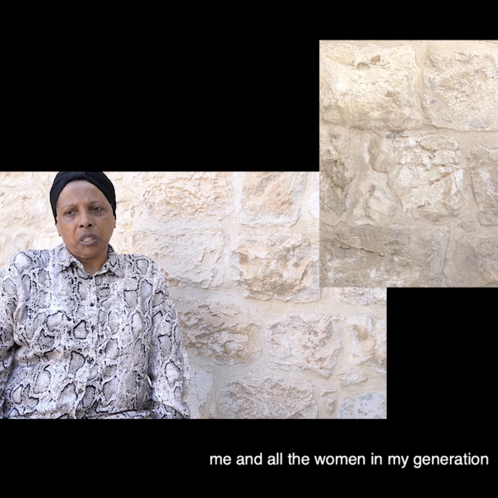
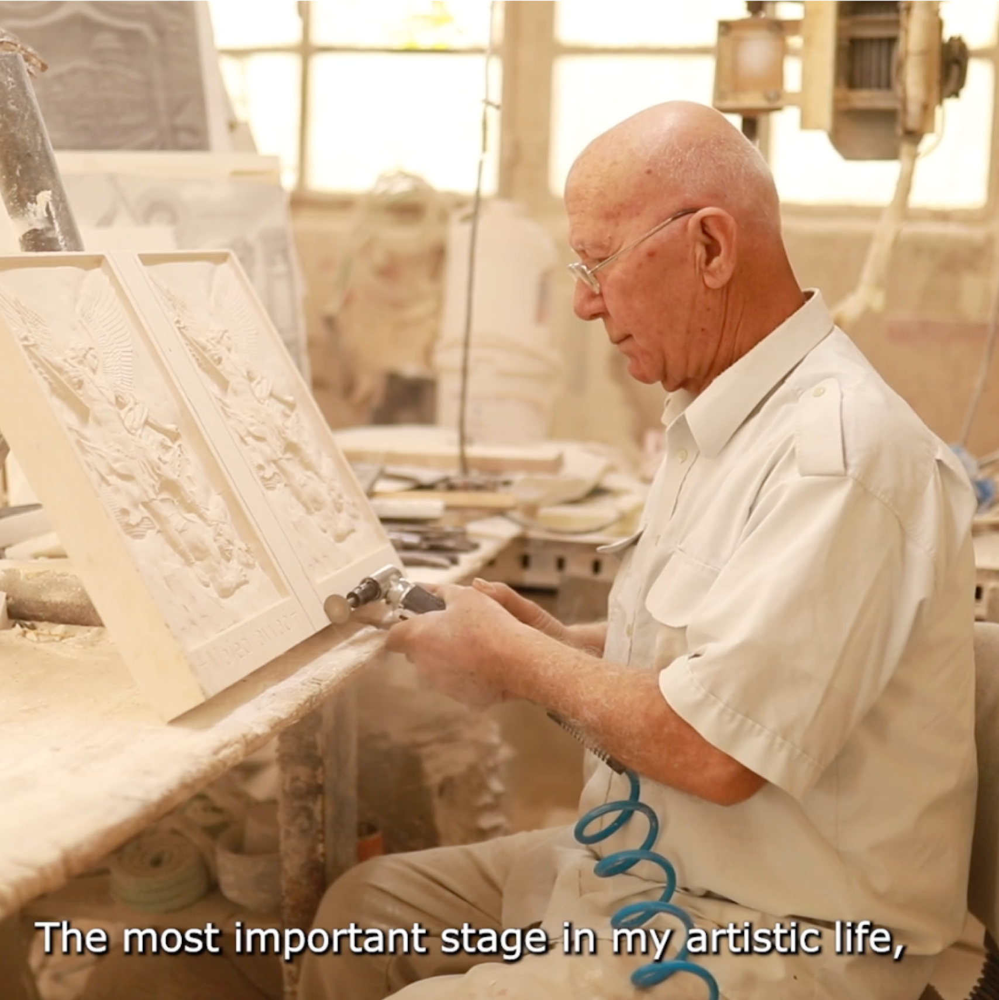

The exhibition presents the diversity of contemporary art of the Sakha people:
photographs of the pristine nature of Yakutia; carvings on mammoth tusk, bone,
wood, and ice; jewelry artistry, sculpture of small forms; graphics, lithography,
painting; performances, theatre, and cinema. The place of meeting and dialogue
will be the virtual space provided by the project on the To Be - Named website.
This approach has ensured the transnational character of the event in cooperation
between science and art and has allowed the expression of creative freedom.
Our virtual exhibition presents a selection of unique works by Sakha artists,
inviting viewers to immerse themselves into the rich diversity of artistic vision of
the masters of their craft.
All artworks are selected in accordance with the project's
concept of names and naming in the context of Sakha ethnic identity.
Photographs of the artworks were kindly provided from the personal archives of
the artists themselves.
We are very grateful to the artists for their support of the project, trust, and
cooperation!
Curated by Vivien Sansour
Для перевода на английский язык на сайт: Виртуальная выставка "Sakha aata - Sakha aattaakhtara", что переводится как "Sakha names about Sakha names. Выставка представляет арт-работы 7 независимых художников и 2 арт-групп из Саха (Якутия) и посвящена теме именования и его значения для идентичности человека и народа. Выставка представляет разнообразие современного искусства народа Саха: фотографии первозданной природы Якутии; резьба на бивне мамонта, кости, дереве и льду; ювелирное мастерство, скульптура малых форм; графика, литография, живопись; перформансы, театр и кино. Местом встречи и диалога будет виртуальное пространство, предоставленное проектом на веб-сайте "To Be - Named". Такой подход обеспечил транснациональный характер мероприятия в сотрудничестве науки с искусством и дал возможность на волеизъявление свободы творчества. Посетителям веб-сайта проекта "To Be - Named" до конца августа 2024 года будет предоставлена уникальная возможность провести всё лето вместе с известными якутскими художниками и их арт работами, которые приглашают ознакомиться с самобытной культурой народа Саха. Наша виртуальная выставка представляет подборку уникальных работ художников из Республики Саха, приглашая зрителей окунуться в богатое многообразие художественного видения мастеров своего дела. Все арт-работы подобраны в соответствии с концепцией проекта об именах и именовании. Фотографии арт-работ любезно предоставлены из личных архивов самих художников. Выражаем огромную благодарность художникам за поддержку проекта, доверие и сотрудничество! Curated by Vivien Sansour
Horizon Ayed Arafah
Horizon
 Bisan Abu Eisheh
Bisan Abu EishehBreathing Archives Bisan Abu Eisheh
Breathing Archives  Laura Menchaca Ruiz & Khader U. Handal
Hay Bethl7em Laura Menchaca Ruiz & Khader U. Handal
Hay Bethl7em  Raneem Ayyad
The Bridge Raneem Ayyad
The Bridge
 Saida Hamad
Saida HamadAsameena Saida Hamad
Asameena
 Samar Hazboun
Samar HazbounFamily Archive Project Samar Hazboun
Family Archive Project
 Shada Safadi
Shada Safadi“Birds, They No Longer Want to Migrate” Shada Safadi
“Birds, They No Longer Want to Migrate”